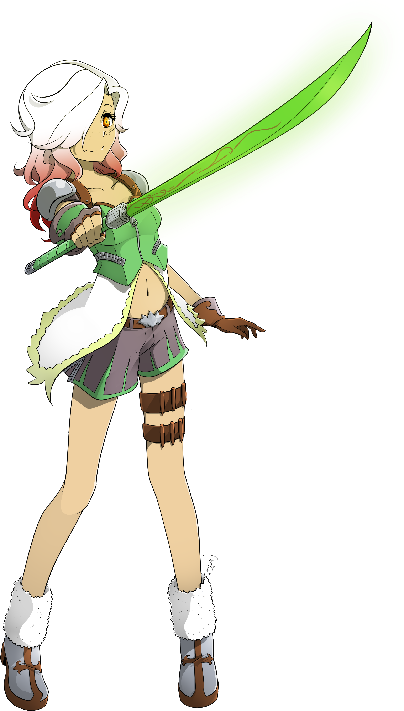
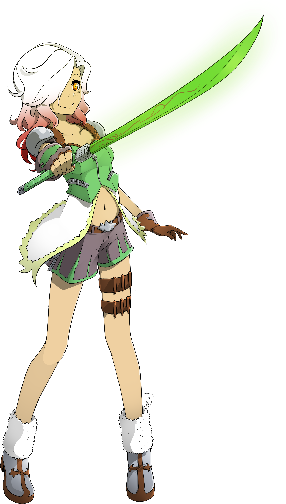

Tessera Shai

name: Tessera Shai
age: 17
hair color: Snow white with blood red tips
hair style: wavy shoulder length
skin tone: tan with dark freckles across her nose
eye color: bright orange glowing, with white pupils
height: 5 ft 2.83 in
ethnicity/race: Latina
key attribute: hyperactive
left-handed
body type: waifish
Character Bio/Personality:
A exceptional marksman, Tessera is far removed from Heart Adagio. Tessera fights with kunai knives,
handguns, and when the occasion allows, explosives. Tessera seeks the Fallire Finale, a sword tied
to the throne of the Tribal Lands of Vagor.